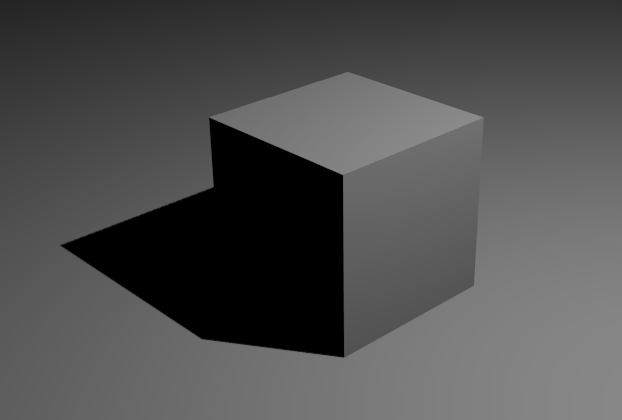

Iluminación
Hasta ahora siempre hemos iluminado la escena con lo que hemos llamado iluminación básica y que consiste en:
- Oclusión ambiental con Muestras: 10.
- Una fuente luminosa de tipo Puntual que genera sombras (Sombra por trazado) con Muestras: 6 y Tamaño de suavizado: 1.000.
Pero ha llegado la hora de comenzar a considerar la luz como un elemento más de la composición de nuestra escena. Estudiamos en este apartado las características de los diferentes tipos de fuentes luminosas con las que contamos, así como otros aspectos que afectan a la ambientación como pueden ser las propiedades del cielo o de la propia atmósfera.
Importante
A partir de ahora damos por supuesto que la Oclusión ambiental está desactivada. Además siempre que comencemos a hablar de una lámpara daremos por hecho que acaba de salir a la escena y que todos sus parámetros están por defecto; de ese modo podremos garantizar que los resultados se corresponden con las imágenes que aparecen en este material educativo.
Con lo dicho anteriormente este sería el aspecto de una iluminación por defecto.
